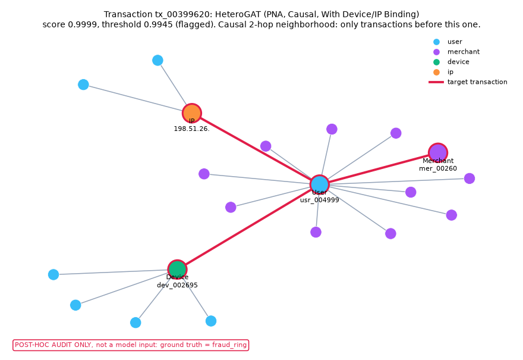

Real-Time Fraud Detection with Graph Neural Networks
Heterogeneous transaction graphs (users, cards, merchants, devices, IPs), leak-free causal evaluation, and per-model explanations of flagged transactions.
Results
The leak-free test results are being finalised. The full table, with 95% bootstrap confidence intervals and the leakage checks, is in benchmarks.md.
Example: a flagged fraud ring

The fraud type is a post-hoc audit label, never a model input.
Explanation pages
Each page shows one transaction's causal 2-hop neighborhood and the reason codes of a single model. xgb_lf = XGBoost with label-free graph features (SHAP); gat_bind = HeteroGAT with device/IP binding, the model trained on shared batches (perturbation).
Fraud ring
- tx_00399620 xgb_lf
- tx_00399620 gat_bind
Account takeover
- tx_00399482 xgb_lf
- tx_00399482 gat_bind
Merchant collusion
- tx_00399840 xgb_lf
- tx_00402530 gat_bind
Card testing
- tx_00401496 xgb_lf
- tx_00403006 gat_bind
Mule
- tx_00399518 xgb_lf
- tx_00399518 gat_bind
Explanation pages load the vis-network library from a CDN, so they need an internet connection. Licensed under PolyForm Noncommercial 1.0.0.